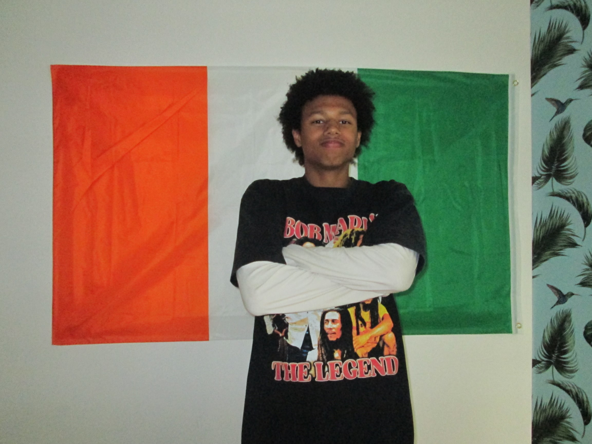

Franco-ivoirien de parents expatriés, j’ai suivi la grande
majorité de mes études dans différents pays en Afrique (Cameroun,
Nigéria, Sénégal, Mali). Cela m’a permis d’acquérir une grande
ouverture d’esprit, une forte capacité d’adaptation, ainsi qu’une
grande curiosité. Les pays dans lequels j’ai vécu m’ont permis de
découvrir différentes cultures et c’est ce qui m’a enrichi
personnellement et donné l’aspiration à continuer dans cette
lancée. Voilà pourquoi mon souhait serait d’évoluer vers une
carrière à l’international dans le monde de l’informatique et du
développement digital/web.
C'est d'ailleurs au lycée Jean Mermoz de Dakar que j'ai découvert
un interêt envers le monde du Digital, en Seconde. J'ai toujours
été dans le milieu du digital de part mon père qui lui aussi porte
un certain interêt pour le monde du digital nottament pour les
Jeux-Vidéo. Mais en Seconde, j'ai découvert le montage vidéo et le
codage. Cela dit, c'est en Première, au lycée Lavoisier à Paris
que j'ai commencer la spécialité NSI et que j'ai su que plus tard
j'aimerais travailler dans le monde de l'informatique et du
développement digital web, et pourquoi pas dans le milieu de
cybersécurité.